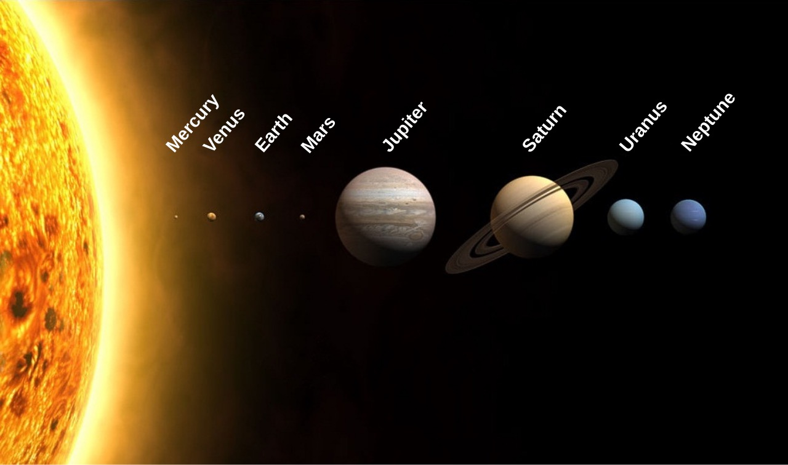
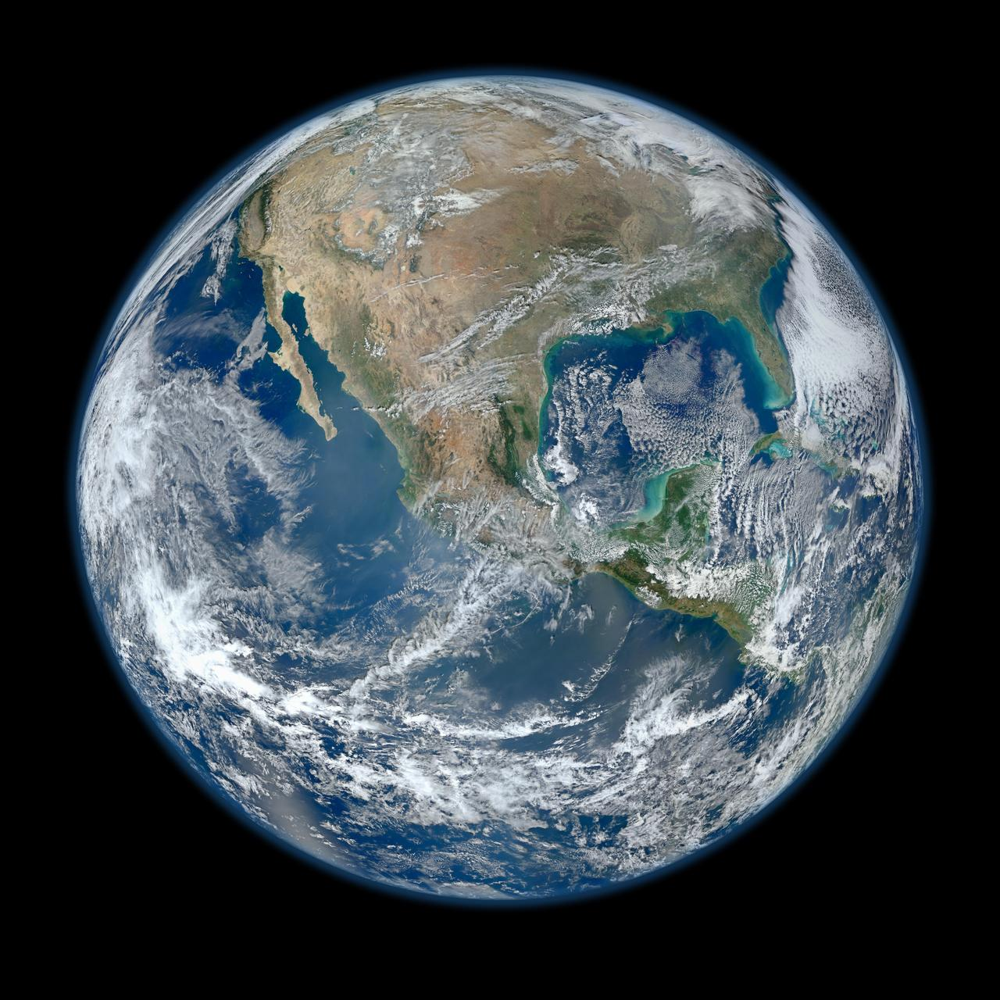
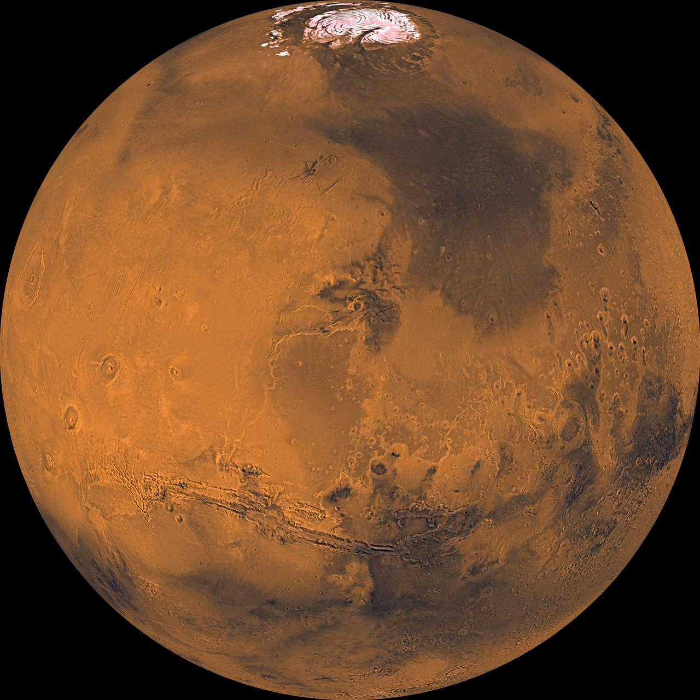

Topic Description
I picked the solar system because I’ve always liked looking up weird planet facts, but finding them in one spot is annoying. One site has diameter. Another has temperature. A textbook might skip moons almost entirely. If you just want a straight answer about Mars or Titan, you end up bouncing between tabs and trying to remember what you already read.
That gap is the problem I want to work on. People searching this topic aren’t usually looking for a research paper. They want basics: how big is it, how far away, how long is the year, and what’s actually interesting about it. Astronomy is cool for that reason. Earth is familiar, and then you realize other places in the same system are completely different. Some are boiling hot. Some are frozen. Some aren’t even planets anymore, like Pluto.
There are already good resources out there. NASA’s Solar System Exploration site has a ton of material, and the NASA Planetary Fact Sheet is packed with numbers. They’re helpful if you already know what you’re looking for, but they’re easy to get lost in. I want a smaller site that uses the same kind of facts, just laid out so you pick a group, pick one object, and get the details without hunting around.

App Description
The app is called Solar System Explorer. It’ll have four pages total. Home is the intro: a short overview, a couple images, and links into the rest of the site. Planet Explorer is the interactive page. You choose a category first, then choose something inside that category, and then you see the info for that choice. Planet Comparison is a reading page where I can put size, mass, temperature, and orbit side by side. Contact Us starts simple and stays static for now. Later in the semester, when we get to databases, that page is where user info can go.
Planned Pages
- Home — quick intro to the solar system, images, and links to the other pages
- Planet Explorer — two-step picker that ends on one object’s details
- Planet Comparison — static page for comparing planet stats
- Contact Us — static contact page for now, form storage later
Two-Step Explorer Flow
The explorer needs two steps in order. Step 1 is one of four main groups. Step 2 depends on whatever got picked in Step 1, and each group has four options. Whatever path someone takes, the final screen should show the same kinds of facts. That way when JavaScript gets added later, I’m not writing sixteen different layouts. I’m thinking diameter, distance, orbital period, average temperature, and a short blurb.
Choice 1: Inner Planets
- Mercury
- Venus
- Earth
- Mars
Choice 2: Outer Planets
- Jupiter
- Saturn
- Uranus
- Neptune
Choice 3: Dwarf Planets
- Pluto
- Ceres
- Eris
- Makemake
Choice 4: Notable Moons
- Earth’s Moon
- Europa
- Titan
- Ganymede
So a normal run might look like Inner Planets → Mars → Mars info. Or Notable Moons → Titan → Titan info. I originally thought about splitting things into just terrestrial vs gas/ice giants, but the project asks for four starting choices with four options under each. Grouping them this way still makes sense and gives me sixteen endings that all show the same style of data.

